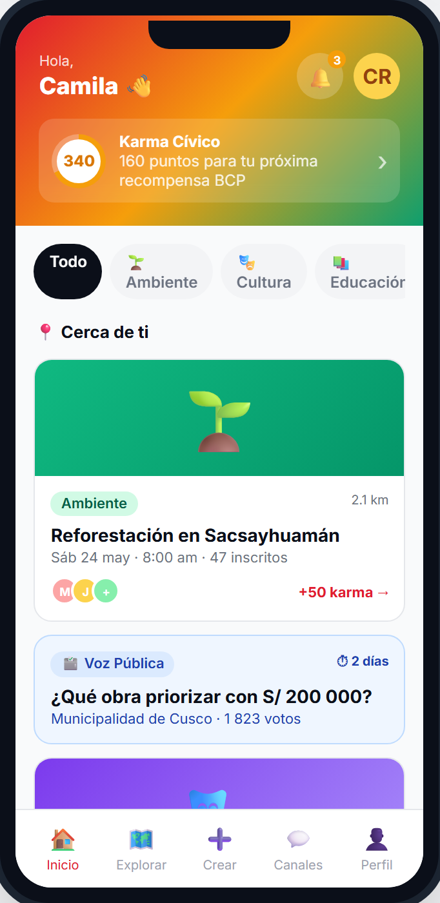
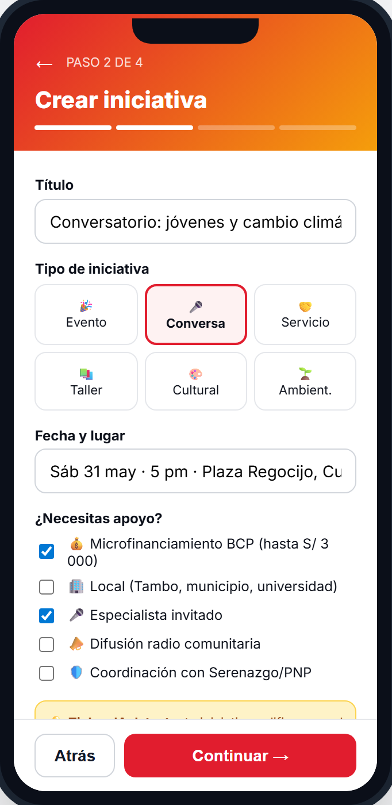
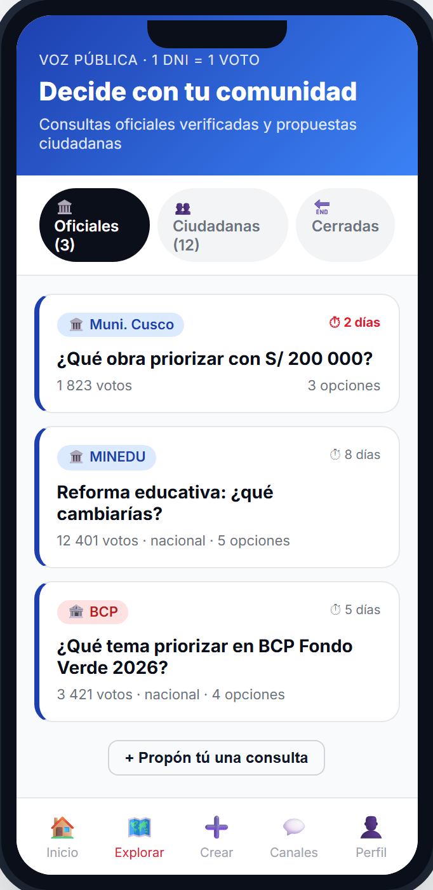
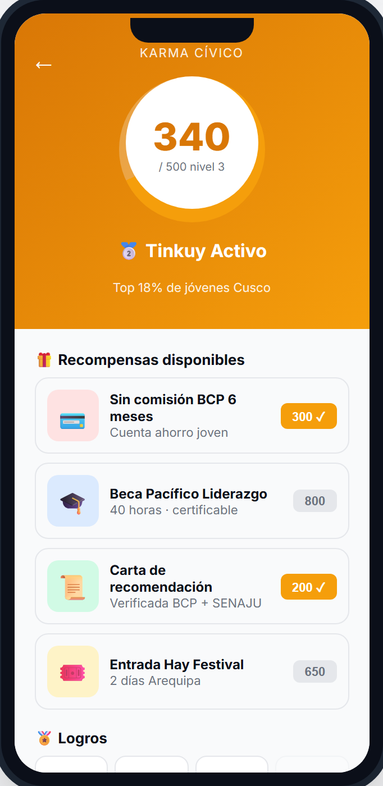
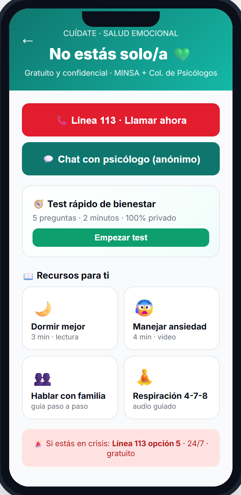
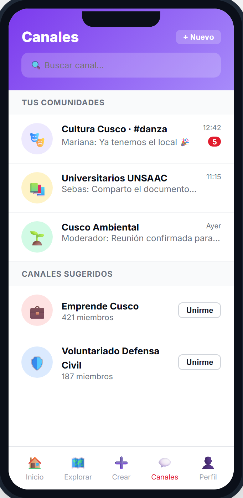
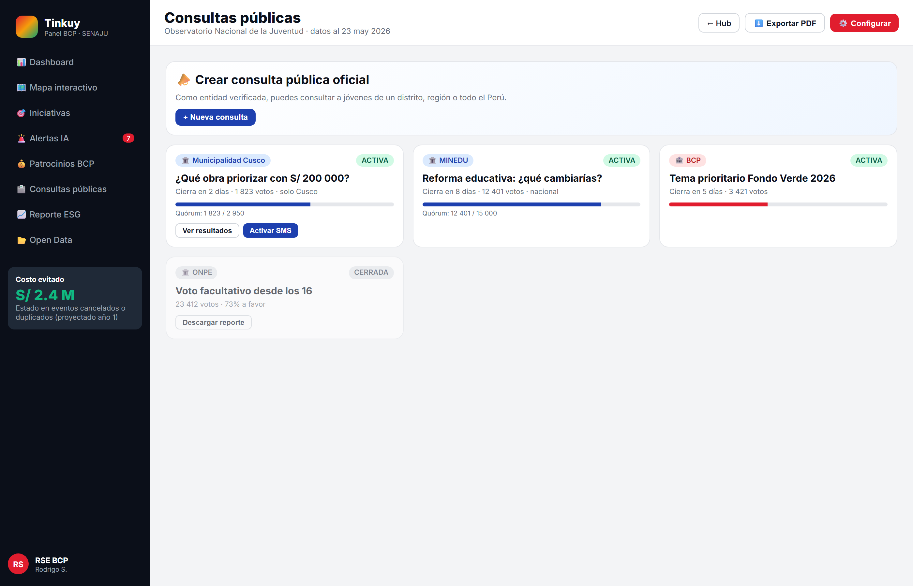
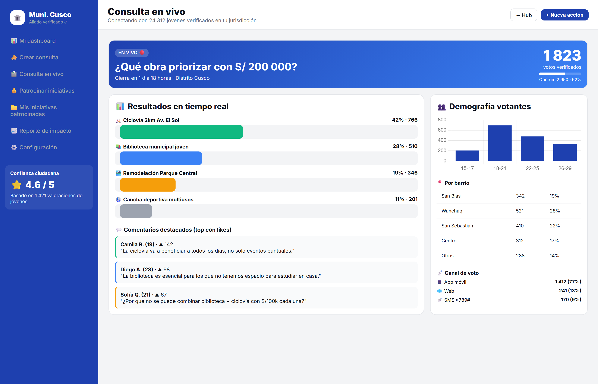
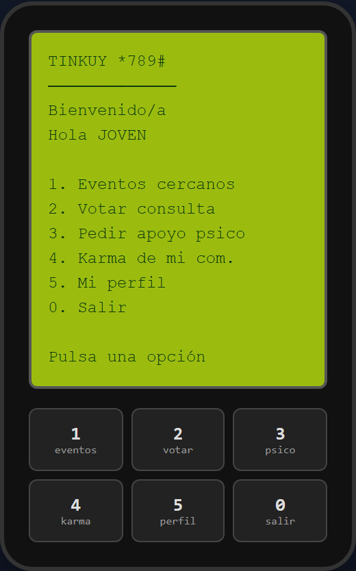
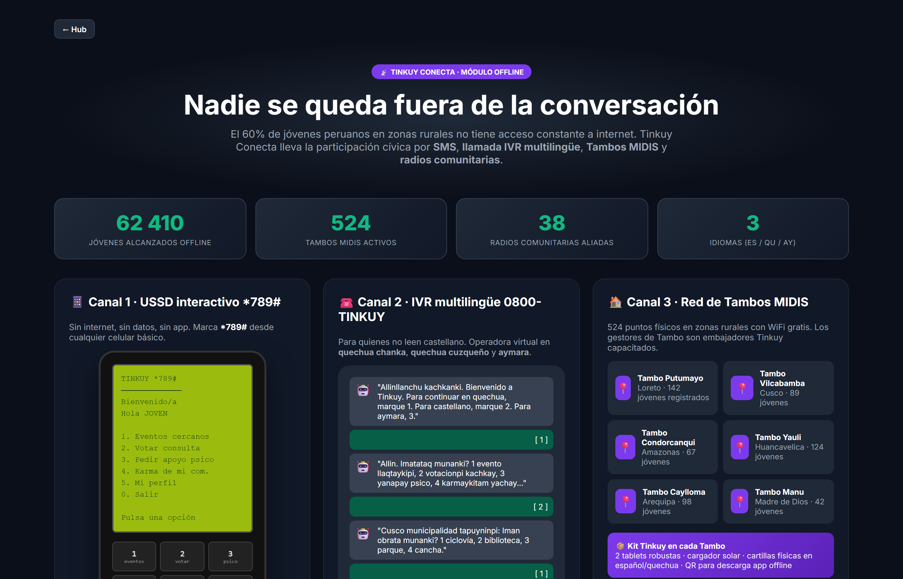

Solo jóvenes verificados con DNI. Cero bots, espacio seguro y oficial.
Lanza eventos culturales, ambientales, charlas o jornadas en 3 minutos.
Consultas del Estado y empresas con voto vinculante (1 DNI = 1 voto).
Cada hora de voluntariado suma puntos canjeables por becas y certificados.
Acceso a psicólogos 24/7 gratis. Atiende al 30% con ansiedad o depresión.
Chats moderados por distrito, región y tema. Espacio oficial y seguro.
Comunidades activas y brechas mapeadas.
Métricas: activos, iniciativas, votaciones.
Detecta zonas de baja participación.
Estado publica; jóvenes votan en vivo.
Datos descargables para municipalidades.




Canal oficial marcando *789# desde cualquier celular básico, sin datos.
Menú de voz interactivo en español, quechua y aymara. Sin saber leer.
Alianza con radios locales (CONCORTV: 1 200+ emisoras) para difundir iniciativas.
Microfinanciamiento juvenil accesible también vía SMS con rendición transparente.
Solo jóvenes verificados con DNI. Cero bots, espacio seguro y oficial.
Por primera vez mapeamos comunidades activas y zonas con brecha tecnológica.
Consultas del Estado y empresas con voto vinculante (1 DNI = 1 voto).
Lanza eventos culturales, ambientales, charlas o jornadas en 3 minutos.
Cada hora de voluntariado suma puntos canjeables por becas y certificados.
Acceso a psicólogos 24/7 gratis. Atiende al 30% con ansiedad o depresión.
Microfinanciamiento juvenil con rendición de cuentas transparente.
Chats moderados por distrito, región y tema. Espacio oficial y seguro.
Nadie queda fuera: español, quechua, aymara. Funciona en celular básico.
Piloto en 3 distritos: 1 Lima Metropolitana + 1 sierra + 1 selva. 500 jóvenes. Métricas baseline.
Lanzamiento web/app + Mapa para SENAJU. Cobertura 50 distritos prioritarios. Meta: 50 000 jóvenes.
Tinkuy Conecta (SMS/IVR) + alianzas con 200 municipalidades. Meta: 500 000 jóvenes.
1 874 distritos cubiertos. Meta: 2 millones de jóvenes activos (≈25% del universo juvenil).